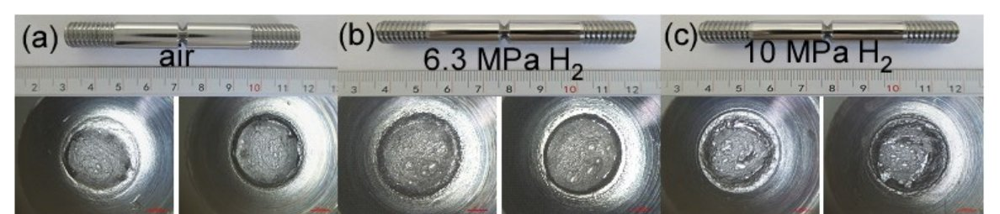

EksperimenExperiment
Replikasi uji tarik X52 dalam gas hidrogenReplicating X52 tensile tests in hydrogen gas
TujuanAim
Data material yang belum ada di IndonesiaMaterial data that do not yet exist in Indonesia
Mengukur degradasi keuletan baja API 5L X52 dalam gas H₂ lewat uji tarik statis halus dan bertakik, lalu menjelaskan mekanismenya dari mikro- dan makrostruktur. Tahap 1: logam induk pada H₂ murni 6,3 dan 10 MPa (acuan [201]); opsi tekanan rendah pH₂ ≤1 MPa (acuan [022]); las dan HAZ di tahap 2.
Measure the ductility loss of API 5L X52 steel in H₂ gas through smooth and notched static tensile tests, and explain the mechanisms from micro- and macrostructure. Stage 1: base metal in pure H₂ at 6.3 and 10 MPa (after [201]); a low-pressure option at pH₂ ≤1 MPa (after [022]); welds and HAZ in stage 2.
Uji tarik dalam gas H₂Tensile tests in H₂ gas
halus + bertakik, n = 3 per kondisismooth + notched, n = 3 per condition
Indeks penggetasanEmbrittlement indices
RRA, rasio NTS, IRA; fraktografiRRA, NTS ratio, IRA; fractography
Distribusi parameterParameter distributions
sebaran antarulangan dan antarzonascatter across replicates and zones
QRAQRA
faktor degradasi sebagai masukan stokastikdegradation factor as a stochastic input
LCOHLCOH
biaya inspeksi, derating, dan risikoinspection, derating, and risk costs
Paper acuanReference papers
Dua paper untuk direplikasiTwo papers to replicate
| AspekAspect | [201] Li dkk. (2025), Materials 18:3417 | [022] Sun dkk. (2026), IJPVP 222:105787 |
|---|---|---|
| MaterialMaterial | X52 pipa φ610 × 14,3 dan φ1219 × 27,5 mm; logam induk, las lurus, las keliling, HAZ (hlm. 5)X52 pipe φ610 × 14.3 and φ1219 × 27.5 mm; base metal, seam weld, girth weld, HAZ (p. 5) | X52 dan X65; logam induk, sejajar arah rolling (hlm. 3–4)X52 and X65; base metal, parallel to rolling direction (pp. 3–4) |
| LingkunganEnvironment | H₂ 6,3 dan 10 MPa; kemurnian gas dan suhu uji tidak dinyatakanH₂ at 6.3 and 10 MPa; gas purity and test temperature not stated | H₂ + N₂ total 4 MPa, pH₂ 0; 0,4; 0,6; 1 MPa; 35 ± 0,2 °C (hlm. 4)H₂ + N₂ at 4 MPa total, pH₂ 0; 0.4; 0.6; 1 MPa; 35 ± 0.2 °C (p. 4) |
| SpesimenSpecimens | Bertakik Ø10 → Ø5 mm, takik 60°, r 0,083 mm; halus Ø5 mm, panjang ukur 25,4 mm (Gbr. 2–3)Notched Ø10 → Ø5 mm, 60° notch, r 0.083 mm; smooth Ø5 mm, 25.4 mm gauge length (Figs. 2–3) | Halus Ø4 mm, panjang ukur 20 mm; bertakik, takik 60°, r 0,12 mm (Gbr. 3)Smooth Ø4 mm, 20 mm gauge length; notched, 60° notch, r 0.12 mm (Fig. 3) |
| Laju tarikLoading rate | Bertakik 5 × 10⁻⁵ mm/s; halus 3,5 × 10⁻⁴ mm/s (hlm. 5)Notched 5 × 10⁻⁵ mm/s; smooth 3.5 × 10⁻⁴ mm/s (p. 5) | Bertakik 0,01 mm/menit; halus 0,02 mm/menit (hlm. 4)Notched 0.01 mm/min; smooth 0.02 mm/min (p. 4) |
| Pra-paparanPre-exposure | Tidak dinyatakanNot stated | 36 jam dalam gas setelah purging N₂ tiga kali (hlm. 4)36 h in gas after three N₂ purges (p. 4) |
| KarakterisasiCharacterisation | OM (nital 4%), HV10 lintas las, fraktografi makro dan SEM (hlm. 7–14)OM (4% nital), HV10 across welds, macro and SEM fractography (pp. 7–14) | OM, SEM, EBSD (butir, KAM, GND), HV0,1, fraktografi (hlm. 3–8)OM, SEM, EBSD (grains, KAM, GND), HV0.1, fractography (pp. 3–8) |
| Hasil kunciKey result | Rasio RA bertakik logam induk 0,77 (6,3 MPa) dan 0,84 (10 MPa); las lurus 0,51 dan 0,30 (hlm. 15)Notched RA ratio: base metal 0.77 (6.3 MPa) and 0.84 (10 MPa); seam weld 0.51 and 0.30 (p. 15) | IRA halus <25% pada pH₂ ≤0,6 MPa; IRA bertakik >33% pada pH₂ ≥0,6 MPa (hlm. 14)Smooth IRA <25% at pH₂ ≤0.6 MPa; notched IRA >33% at pH₂ ≥0.6 MPa (p. 14) |
Prioritas 1 · [201] sebagai acuan matriks uji: H₂ murni pada X52 dan lasannya paling dekat dengan pipa H₂ hijau dari PLTP; inkonsistensi data RA membuat replikasi bernilai sebagai verifikasi; gambar berlisensi CC BY.
Priority 1 · [201] as the test-matrix reference: pure H₂ on X52 and its welds is closest to green-H₂ pipelines from geothermal plants; inconsistent RA data make replication valuable as verification; figures are CC BY.
Prioritas 2 · [022] sebagai acuan protokol: suhu, purging, pra-paparan 36 jam, dan EBSD menutup celah metode [201]; tekanan parsial rendah lebih murah dan aman.
Priority 2 · [022] as the protocol reference: temperature, purging, 36 h pre-exposure, and EBSD close the method gaps of [201]; low partial pressure is cheaper and safer.
Rancangan penyusunAuthor's design Penilaian prioritas oleh penyusun.Priority assessment by the author.
Hasil acuanReference results
Las paling rentanWelds are the most susceptible
Lihat dataView data
| ZonaZone | H₂ 6,3 MPa | H₂ 10 MPa |
|---|---|---|
| Logam indukBase metal | 0,77 | 0,84 |
| Las lurusSeam weld | 0,51 | 0,30 |
| HAZ las lurusSeam-weld HAZ | 0,80 | 0,52 |
| Las kelilingGirth weld | 0,50 | 0,41 |
| HAZ las kelilingGirth-weld HAZ | 0,52 | 0,37 |

Rancangan ujiTest design
Matriks uji replikasiReplication test matrix
| PaketPackage | ZonaZone | LingkunganEnvironment | UjiTests | Jumlah ujiNo. of tests |
|---|---|---|---|---|
| 1 · Karakterisasi awal1 · Baseline characterisation | Logam induk (+ las)Base metal (+ weld) | UdaraAir | Tarik ISO 6892-1, OES, OM, HV, SEM-EDS, EBSDTensile ISO 6892-1, OES, OM, HV, SEM-EDS, EBSD | 3 |
| 2 · Tahap 1 (inti, acuan [201])2 · Stage 1 (core, after [201]) | Logam indukBase metal | Udara/N₂; H₂ 6,3 MPa; H₂ 10 MPaAir/N₂; H₂ 6.3 MPa; H₂ 10 MPa | Halus + bertakik, n = 3Smooth + notched, n = 3 | 18 |
| 3 · Tahap 2 (lanjutan)3 · Stage 2 (extension) | Las lurus, HAZSeam weld, HAZ | Udara/N₂; H₂ 6,3 MPa; H₂ 10 MPaAir/N₂; H₂ 6.3 MPa; H₂ 10 MPa | Bertakik, n = 3Notched, n = 3 | 18 |
| 4 · Opsi tekanan rendah (acuan [022])4 · Low-pressure option (after [022]) | Logam indukBase metal | H₂ + N₂ total 4 MPa; pH₂ 0; 0,4; 0,6; 1 MPaH₂ + N₂ 4 MPa total; pH₂ 0; 0.4; 0.6; 1 MPa | Halus + bertakik, n = 3Smooth + notched, n = 3 | 24 |
| 5 · Opsi C domestik5 · Domestic option C | Logam indukBase metal | Tanpa charging; dua rapat arus katodikUncharged; two cathodic current densities | Halus + bertakik, n = 3Smooth + notched, n = 3 | 18 |
18
uji tarik tahap 1 (paket 2)stage-1 tensile tests (package 2)
12
uji dalam gas H₂ (6,3 dan 10 MPa)tests in H₂ gas (6.3 and 10 MPa)
22
spesimen termasuk 4 cadanganspecimens including 4 spares
±24
hari pemakaian autoklafautoclave days
Rancangan penyusunAuthor's design Geometri dan laju tarik mengikuti [201]; suhu terkendali, purging, dan pra-paparan 36 jam mengikuti [022]. Karakterisasi: OES, OM (ASTM E3, E407), ukuran butir (E112), HV (E384), SEM, EBSD; kriteria NTS menurut CSA/ANSI CHMC 1.Geometry and loading rate follow [201]; controlled temperature, purging, and 36 h pre-exposure follow [022]. Characterisation: OES, OM (ASTM E3, E407), grain size (E112), HV (E384), SEM, EBSD; NTS criteria per CSA/ANSI CHMC 1.
RealisasiDelivery
Tiga opsi, satu urutanThree options, one sequence
| AspekAspect | A · Vendor komersialA · Commercial vendor | B · Kampus/lembaga mitraB · Partner university/institute | C · Domestik elektrokimiaC · Domestic electrochemical |
|---|---|---|---|
| Lingkungan hidrogenHydrogen environment | Gas H₂ bertekanan in-situIn-situ pressurised H₂ gas | Gas H₂ bertekanan in-situIn-situ pressurised H₂ gas | Charging elektrokimia (proksi)Electrochemical charging (proxy) |
| Kesetaraan dengan [201]/[022]Equivalence to [201]/[022] | TinggiHigh | TinggiHigh | Rendah–sedangLow–medium |
| Kendali penelitiResearcher control | Rendah: menerima laporanLow: receives a report | Tinggi: ikut mengujiHigh: hands-on testing | TinggiHigh |
| Biaya tahap 1 (estimasi)Stage 1 cost (estimate) | Rp 162,1–753,3 jutaIDR 162.1–753.3 million | Rp 472,4–1.063,6 jutaIDR 472.4–1,063.6 million | ±Rp 115,5 juta~IDR 115.5 million |
| Waktu kritisCritical path | Antrean slot autoklafAutoclave slot queue | MoU, visa, slotMoU, visa, slot | Paling cepatFastest |
| Risiko utamaMain risk | Biaya per uji tinggiHigh cost per test | Biaya perjalanan, administrasiTravel and administration | Hasil tidak setara gasNot equivalent to gas |
Usulan urutan: opsi C sebagai uji pendahuluan dan kalibrasi prosedur di Indonesia, lalu A atau B untuk uji gas H₂ tahap 1; keputusan A vs B setelah RFQ ke ≥3 penyedia.
Proposed sequence: option C for pre-testing and procedure calibration in Indonesia, then A or B for stage-1 H₂ gas tests; A vs B decided after an RFQ to ≥3 providers.
Penyedia dan laboratorium yang ditelusuriProviders and laboratories surveyed
| PenyediaProvider | LokasiLocation | KapabilitasCapability | OpsiOption |
|---|---|---|---|
| TWI Ltd | Cambridge, UK | SSRT −40 s.d. 80 °C dalam gas H₂ hingga 450 bar; fatigue, FCGR, fracture toughnessSSRT −40 to 80 °C in H₂ gas up to 450 bar; fatigue, FCGR, fracture toughness | A |
| RISE | Swedia / Sweden | SSRT dalam gas H₂ hingga 150 bar; harga melalui tenderSSRT in H₂ gas up to 150 bar; price on tender | A |
| RINA ΔH Lab | Italia / Italy | Tarik, SSRT, fatigue, fracture mechanics; hingga 1.000 bar, 20–150 °CTensile, SSRT, fatigue, fracture mechanics; up to 1,000 bar, 20–150 °C | A |
| EWI | AS / USA | SSRT, fracture toughness, KIH, FCGR; H₂ hingga 2.000 psi (±13,8 MPa)SSRT, fracture toughness, KIH, FCGR; H₂ up to 2,000 psi (~13.8 MPa) | A |
| Kobelco Research Institute | Jepang / Japan | Tarik, fatigue, rambat retak; hingga 140 MPa, −80 s.d. 90 °CTensile, fatigue, crack growth; up to 140 MPa, −80 to 90 °C | A |
| Kyushu University, I²CNER / HYDROGENIUS | Fukuoka, Jepang / Japan | FCG, fatigue, fracture toughness, SSRT; hingga 140 MPa, −45 s.d. 200 °CFCG, fatigue, fracture toughness, SSRT; up to 140 MPa, −45 to 200 °C | B |
| Universidad de Burgos, H2Lab | Burgos, Spanyol / Spain | Autoklaf 300 bar, 300 °C, 50 kN; SSRT, CERT, beban konstan, fracture toughnessAutoclave 300 bar, 300 °C, 50 kN; SSRT, CERT, constant load, fracture toughness | B |
| Fraunhofer IWM | Freiburg, Jerman / Germany | Autoklaf hingga 1.000 bar, −196 s.d. 400 °C; fatigue, rambat retak, fracture toughnessAutoclaves up to 1,000 bar, −196 to 400 °C; fatigue, crack growth, fracture toughness | B |
| Univ. Wollongong / Future Fuels CRC | Australia | Bejana H₂ hingga 137 bar parsial; UTM laju sangat lambat; permeasi, fatigueH₂ vessels up to 137 bar partial; very-slow-rate UTM; permeation, fatigue | B |
| BRIN (Serpong, Bandung) | Indonesia | Uji tarik Rp 315.000/sampel; SEM, metalografi, potensiostat; EBSD kontraktualTensile test IDR 315,000/sample; SEM, metallography, potentiostat; EBSD on contract | C |
Sumber: laman resmi masing-masing penyedia dan Standar Pelayanan BRIN (diakses 30 Okt 2026). Tidak ada penyedia yang mempublikasikan harga uji gas H₂.Sources: each provider’s official website and BRIN service standards (accessed 30 Oct 2026). No provider publishes prices for H₂ gas testing.
JadwalSchedule
Tahap 1 dalam ±12 bulanStage 1 in about 12 months
Rancangan penyusunAuthor's design Bulan sejak keputusan pelaksanaan; jalur kritis pada kontrak penyedia, spesimen presisi, dan slot autoklaf. Tahap 2 (las, HAZ) menambah ±3–4 bulan.Months from the go decision; the critical path runs through the provider contract, precision specimens, and autoclave slots. Stage 2 (weld, HAZ) adds about 3–4 months.
Risiko dan alternatifRisks and alternatives
Rencana cadanganContingency plan
Risiko dan mitigasiRisks and mitigation
| RisikoRisk | MitigasiMitigation |
|---|---|
| Penyedia tidak merespons atau harga terlalu tinggiProviders do not respond or price too high | RFQ paralel ≥3 penyedia; opsi tekanan rendah [022]; kurangi matriks ke logam indukParallel RFQ to ≥3 providers; low-pressure option [022]; reduce matrix to base metal |
| Antrean slot autoklafAutoclave slot queue | Pesan slot sejak kontrak; satukan uji acuan dan H₂ dalam satu kunjunganBook slots at contract signing; combine reference and H₂ tests in one visit |
| Takik tidak sesuai toleransiNotch out of tolerance | Inspeksi profil optik sebelum kirim; cadangan 4 spesimenOptical profile inspection before shipping; 4 spare specimens |
| Hasil berbeda dari paper acuanResults differ from the reference paper | Karakterisasi awal lengkap, tiga ulangan, laporkan ketidakpastian dan perbedaan materialFull baseline characterisation, three replicates, report uncertainty and material differences |
| Opsi C tidak setara gas H₂Option C not equivalent to H₂ gas | Pakai hanya sebagai uji pendahuluan dan kalibrasi prosedurUse only as pre-testing and procedure calibration |
Metode uji alternatif tanpa autoklaf besarAlternative test methods without a large autoclave
| MetodeMethod | PrinsipPrinciple | Contoh hasilExample result |
|---|---|---|
| Hollow specimen (ISO 7039:2024)Hollow specimen (ISO 7039:2024) | Gas bertekanan di rongga spesimen; tanpa autoklafPressurised gas inside the specimen bore; no autoclave | X65 60 bar, SSRT 10⁻⁵ s⁻¹: RA 73 → 51% (logam induk), 72 → 52% (las) [528]X65 at 60 bar, SSRT 10⁻⁵ s⁻¹: RA 73 → 51% (base metal), 72 → 52% (weld) [528] |
| Small punch in-situIn-situ small punch | Spesimen cakram kecil; volume H₂ rendah; banyak uji dapat dilakukan aman [529]Small disc specimens; low H₂ volume; many tests can be run safely [529] | X70: prapaparan 18 jam menaikkan indeks HE 12% [529]X70: 18 h pre-exposure raises the HE index by 12% [529] |
Elektrokimia hanya proksi: indeks kerentanan las X52 79,05% (charging elektrokimia) vs 8,01% (gas H₂ 6,3 MPa) [523].Electrochemical charging is only a proxy: X52 weld susceptibility index 79.05% (electrochemical) vs 8.01% (6.3 MPa H₂ gas) [523].